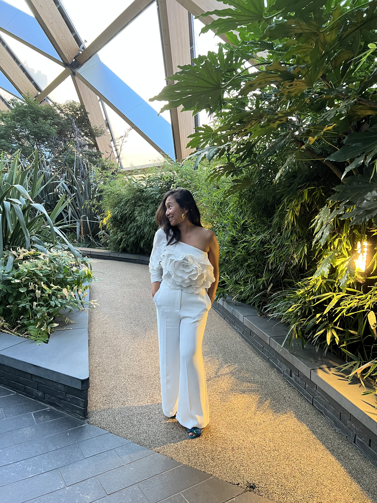

Sheyna ZL is a Malaysian-born writer, researcher, and editor currently based in London. She has a wide range of cross-industry experience, having worked in the tech, education, film and literary spaces over the last decade.
Sheyna has had numerous articles and stories published, both in print and digitally, spanning topics from public health and social commentary, to cookery, film and art. Her most recent story is part of Ab Terra 2024, an anthology that was longlisted for the British Science Fiction Awards. She is also part of the organising team for Imaginarium, a global literature festival celebrating East and Southeast Asian speculative fiction that completed a very well-received second iteration in November 2025.
With a background in Psychology, people have always fascinated Sheyna — their thoughts, motivations, behaviours, and feelings intrigue her — and any opportunity that will allow her to study and ruminate on her fellow human beings gives her much pleasure and satisfaction.
Outside of work, Sheyna’s hobbies are reading, salsa dancing and overthinking.

London, 2025